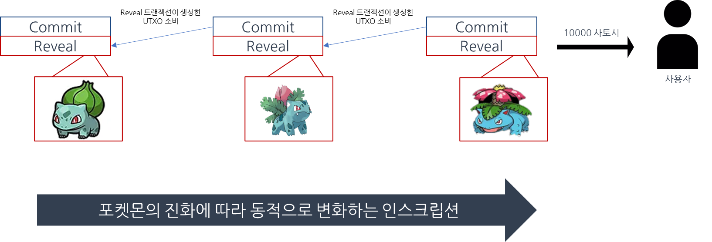

Get your own Dynamic NFT with Bitcoin Ordinals.
DeMo는 Decentralized Monster의 약자로 비트코인 인스크립션(Bitcoin Inscription)과 오디널스 프로토콜(Ordinals Protocol)을 이용해 비트코인 네트워크에서 구현된 다이나믹 NFT를 다루는 최초의 Web3 게임입니다.
비트코인 거래는 UTXO (Unspent Transaction Output)라는 거래 정보를 바탕으로 이루어집니다. 앨리스의 비트코인 잔액은 입금만 받고 아직 송금하지 않은 비트코인, 즉 UTXO의 총합으로 계산되며 앨리스가 밥에게 비트코인을 보낸다는 것은 앨리스 소유의 UTXO를 소모하고 밥 소유의 UTXO를 새로 생성해주는 것 입니다. 이 때, 다른 누군가가 아닌 오직 밥 소유의 UTXO를 생성하기 위해서, 밥의 공개키를 사용하여 새로 생성되는 UTXO를 잠급니다. 해당 UTXO의 잠금은 개인키를 알고있는 UTXO의 소유주인 밥만이 해제하고 소모할 수 있습니다. 이러한 UTXO의 잠금과 해제의 과정은 비트코인 스크립트라는 단순한 프로그래밍 언어를 통해 구현됩니다. 일반적인 비트코인 거래의 경우, 거래 데이터에는 생성되는 UTXO의 잠금 내용과 소모하는 UTXO의 잠금 해제에 관한 내용이 비트코인 스크립트로 들어가 있으며 비트코인 블록체인에는 UTXO의 잠금과 해제에 관한 스크립트가 저장됩니다. 비트코인 인스크립션은 잠금과 잠금 해제 내용이 아닌 임의의 데이터를 직접 비트코인 스크립트에 넣고 비트코인 거래에 사용함으로서 비트코인 네트워크에 직접 임의의 데이터를 저장할 수 있도록 하는 기술입니다.
비트코인의 최소 단위인 사토시와 비트코인 인스크립션으로 저장된 임의의 데이터를 1대1로 매핑해주는 프로토콜입니다. 이를 활용하여 기존에 이더리움 또는 폴리곤 네트워크에서만 발행 가능했던 NFT를 비트코인 네트워크에서도 발행할 수 있습니다. 또한 사용자는 NFT 데이터가 매핑되어있는 사토시를 소유하고 있는 것으로 해당 데이터의 소유권을 주장할 수 있습니다.
오디널스 프로토콜에 대한 자세한 내용DeMo는 Decentralized Monster의 약자로 비트코인 네트워크에서 구현된 다이나믹 NFT를 다루는 최초의 Web3 게임입니다. 다이나믹 인스크립션은 이더리움에서의 다이나믹 NFT와 같이 동적으로 메타데이터를 변경할 수 있는 인스크립션을 생성합니다. 기존 오디널스 프로토콜에서는 특정 사토시가 단 하나의 인스크립션 데이터와 매핑된다면 다이나믹 인스크립션에서는 특정 사토시가 NFT 객체와 매핑됩니다. 만약 NFT 객체에 변화를 주고 싶다면, NFT 객체의 이전 상태가 담긴 인스크립션에 이어 최신 상태가 담긴 인스크립션을 추가적으로 발행하고 최신 상태의 정보가 담긴 인크스립션과 매핑된 사토시를 사용자에게 전송합니다.
이를 통해, 이벤트가 발생할 때 마다 NFT의 데이터가 동적으로 변하는 다이나믹 NFT를 비트코인 네트워크 상에서 구현할 수 있습니다.
DeMo에 대한 자세한 내용